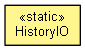

org.waarp.xample
Class HistoryIO
java.lang.Object
 org.waarp.xample.HistoryIO
org.waarp.xample.HistoryIO
public class HistoryIO
- extends Object

A helper class for the XAmple application which reads and writes history
of accessed XSD and XML files. The history is stored in the XML format.
- Version:
- 2.0
- Author:
- Felix Golubov
| Methods inherited from class java.lang.Object |
clone, equals, finalize, getClass, hashCode, notify, notifyAll, toString, wait, wait, wait |
HISTORY_FILE_NAME
public static final String HISTORY_FILE_NAME
- See Also:
- Constant Field Values
HISTORY
public static final String HISTORY
- See Also:
- Constant Field Values
XSD_DOC
public static final String XSD_DOC
- See Also:
- Constant Field Values
XML_DOC
public static final String XML_DOC
- See Also:
- Constant Field Values
FILE
public static final String FILE
- See Also:
- Constant Field Values
HistoryIO
public HistoryIO()
load
public static void load(History history)
save
public static void save(History history)
Copyright © 2009-2012 Waarp. All Rights Reserved.